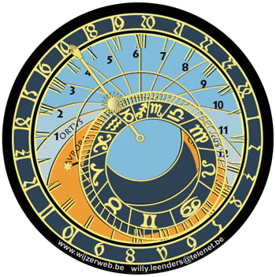
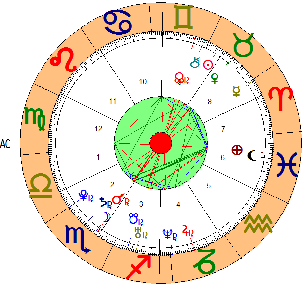
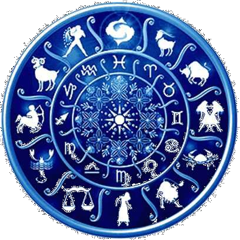
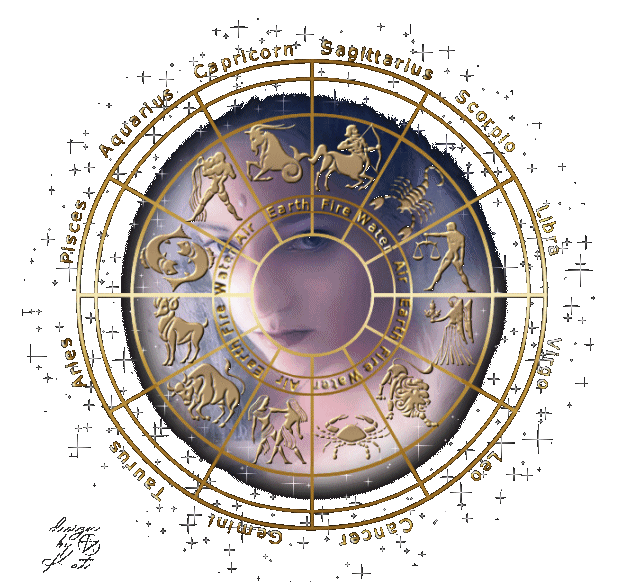

Tarot, Reiki y Astrología
La astrología kármica es el estudio de las energías que interactúan entre los planetas luminarias del sistema solar y los seres humanos incluyendo los factores kármicos como Lilith, que es la luna negra, Quirón, que son las heridas del pasado y los nodos lunares, que es "lo que traigo" y lo que puedo mejorar de eso que traigo. Estos tres últimos son importantes para la evolución de la conciencia humana. Tomando en cuenta lo descripto arriba, cualquier persona puede pedir a un astrólogo con conocimientos en los factores kármicos un estudio de esta existencia completa, carta natal kármica, o bien una revolución solar kármica (un año), para trabajar internamente. El estudio de la carta o revolución toma aproximadamente de 5 a 7 días para la entrega, con asesoramiento en persona o por video conferencia.
La carta natal kármica es un estudio de un ser humano, basado en las energías que trae a esta existencia tomando como base el día, el mes, el año y la hora de nacimiento, además del lugar de nacimiento más el lugar donde vive actualmente. Luego se realiza un informe que describe con mucha aproximación las energías que van a encauzar su vida. Puede solicitar una carta natal, o consultar algo sobre la misma, por teléfono o e-mail en la sección consultas
La revolución solar kármica es el estudio en profundidad de una persona y sus energías durante el lapso de un año. Ese año se toma desde su fecha de cumpleaños hasta su fecha de cumpleaños próxima, del año entrante.
Como se mencionó anteriormente, la posición de los planetas y la energía que estos desprenden influyen en los patrones mentales de los seres humanos. Una de las influencias más importantes se da en el momento del nacimiento de la persona. La revolución de la Tierra alrededor del Sol se divide en 12 partes, clasificadas como signos. Cada una le impregna a sus nativos determinadas características en cuanto a su personalidad y su forma de actuar en diversos aspectos de la vida como el amor, el trabajo y los estudios. Lo que no quiere decir que solo el signo en el cual nació sea la única influencia que la persona tenga a lo largo de su vida. Los signos del zodíaco se dividen en 4 grupos: fuego, tierra, aire y agua, cada grupo con 3 signos de pertenencia. Esta clasificación es una analogía del comportamiento promedio de los nativos de cada signo. Los signos de fuego son: Aries, Leo y Sagitario; Los de tierra son Tauro, Virgo y Capricornio; Los de aire son Géminis, Libra y Acuario, mientras que los de agua son Cáncer, Escorpio y Piscis.
Por el astrólogo Claudio Gini